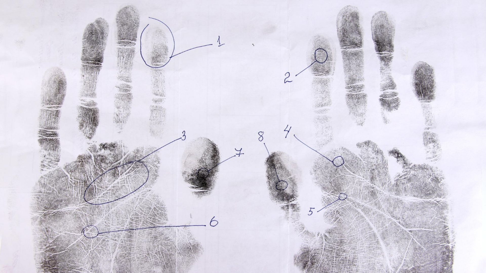

29 October 2025
The biometric authentication landscape is experiencing unprecedented growth, fundamentally reshaping how organisations approach security, access control, and user verification.
From banking institutions to retail environments, healthcare facilities to corporate offices, biometric systems have evolved from futuristic concepts to essential business infrastructure. However, the proliferation of options in the market presents both opportunities and challenges for decision-makers seeking to implement the most suitable solution.
The stakes for selecting the right biometric authentication system have never been higher. Poor implementation decisions can result in security vulnerabilities, operational inefficiencies, and significant financial losses. Conversely, a well-chosen system can enhance security framework, streamline operations, and provide a competitive advantage in an increasingly digital marketplace.
The facial recognition market is expected to reach USD 8.58 billion in 2025 and grow at a CAGR of 16.33% to reach USD 18.28 billion by 2030, demonstrating the robust demand for advanced biometric solutions across industries. This growth trajectory reflects not only technological advancement but also increasing recognition of biometrics as a cornerstone of modern security infrastructure.
The expansion is driven by multiple factors, including the growing sophistication of cyber threats, regulatory compliance requirements, and consumer expectations for seamless yet secure authentication experiences. Organisations are increasingly recognising that traditional password-based systems are inadequate for protecting sensitive data and controlling access to critical resources.
However, this rapid growth also brings challenges. Concerns about biometric data breaches increased from 69% to 86% within recent years, highlighting the critical importance of selecting systems with robust security features and reliable vendor support. This statistic underscores the need for comprehensive evaluation criteria when choosing biometric solutions.
Before investing in any biometric security system, institutions must address fundamental questions that will determine the success of their implementation. These questions extend beyond basic functionality to encompass long-term viability, security resilience, and operational compatibility.
The ability to integrate seamlessly with existing infrastructure determines both implementation complexity and long-term operational efficiency. Modern biometric systems must interface with various technologies, from point-of-sale terminals to enterprise access control systems. This compatibility reduces deployment costs and simplifies maintenance requirements.
For organisations utilising comprehensive payment and access control solutions, such as those offered by Access Computech's STORM TMS platform, integration capabilities become particularly significant. The ability to synchronise biometric authentication with existing merchant management systems and download management platforms streamlines operations and reduces technical complexity.
Environmental Resilience
The most effective biometric systems demonstrate consistent performance across extreme conditions. This includes operation in bright sunlight, low-light environments, and varying weather conditions. Temperature resistance ensures reliable function in both heated indoor environments and cold outdoor installations.
Dust and moisture resistance ratings indicate system durability and maintenance requirements. Higher protection ratings reduce maintenance frequency and extend operational lifespan, providing better long-term value despite potentially higher initial costs.
Advanced Security Measures
Comprehensive security architecture encompasses multiple layers of protection. Encrypted storage prevents unauthorised access to biometric templates, whilst secure transmission protocols protect data during communication between system components. Hardware security modules provide additional protection for sensitive cryptographic operations.
Regular security updates and patch management capabilities ensure systems remain protected against emerging threats. Vendors should demonstrate a commitment to ongoing security support and provide clear update schedules and procedures.
Accurate Matching Algorithms
High-quality matching algorithms maintain accuracy across various conditions, including changes in appearance, lighting, and camera angles. The most sophisticated systems employ machine learning techniques that improve performance over time whilst maintaining consistent accuracy standards.
False acceptance and false rejection rates provide quantifiable measures of system accuracy. Organisations should establish acceptable thresholds based on their security requirements and user experience expectations.
Intuitive User Interface Design
User interface design significantly impacts adoption rates and operational efficiency. Intuitive systems reduce training requirements and minimise user errors. Clear visual feedback guides users through the authentication process, reducing frustration and improving completion rates.
Accessibility features ensure systems accommodate users with disabilities, meeting legal requirements whilst demonstrating social responsibility. This includes support for various heights, mobility limitations, and sensory impairments.
Seamless Integration Architecture
Modern biometric systems must integrate with diverse technologies without requiring extensive customisation. Standard APIs and communication protocols facilitate integration whilst reducing development time and costs. Compatibility with existing security infrastructure ensures cohesive operation across organisational systems.
For organisations implementing comprehensive solutions such as Access Computech's Smartpay Android Payment Application, seamless integration capabilities enable unified user experiences across payment processing, access control, and time management systems.
Regulatory Compliance and Standards
Compliance with international standards provides assurance of quality and interoperability. ISO 30107-3 certification for anti-spoofing and other relevant standards indicate thorough testing and validation. GDPR compliance and other data protection requirements ensure legal operation across jurisdictions.
Documentation of compliance measures and audit trails supports organisational compliance efforts and regulatory reporting requirements. This transparency builds confidence and reduces legal risks associated with biometric system deployment.
Vendor Reliability and Support
Long-term vendor viability ensures ongoing support and system evolution. Established vendors with strong financial positions and proven track records provide greater assurance of continued service and development. Technical support capabilities, including response times and expertise levels, directly impact operational continuity.
Training and documentation quality affects implementation success and ongoing operational efficiency. Comprehensive training programmes and detailed documentation reduce dependency on vendor support whilst enabling effective internal management.
Access Computech's comprehensive portfolio of biometric and authentication solutions addresses the full spectrum of organisational requirements. From UIDAI-approved Aadhaar authentication devices like the FM220UL1 with its secured boot and trust zone encryption, to advanced time attendance access control systems such as the FP-900 with RF card integration, the company provides solutions that meet diverse operational needs.
The integration of payment management solutions with biometric authentication creates comprehensive ecosystems that address multiple organisational requirements simultaneously. The Apos A20FP authentication device exemplifies this approach, combining ergonomic design with fast scanning speeds and distortion-free image quality for effective Aadhaar-based authentication.
Access Computech's commitment to innovation extends to next-generation platforms such as STORM TMS, which demonstrates how biometric systems can integrate seamlessly with broader organisational infrastructure. This holistic approach reduces implementation complexity whilst providing scalable solutions that evolve with organisational growth.
Selecting the optimal biometric authentication system requires careful evaluation of multiple factors, from environmental adaptability and security architecture to integration capabilities and vendor reliability. The decisions made today will impact organisational security, operational efficiency, and user experience for years to come.
The biometric authentication market's rapid growth reflects both opportunity and challenge. Organisations that invest time in comprehensive evaluation and select systems based on robust criteria will realise significant advantages in security, efficiency, and competitive positioning. Those that rush implementation without proper consideration risk operational disruption, security vulnerabilities, and substantial reinvestment requirements.
Success requires partnership with established vendors who demonstrate commitment to ongoing innovation, security, and customer support. Access Computech's comprehensive approach to biometric authentication and payment solutions provides the foundation for organisations seeking to implement robust, scalable, and future-ready authentication systems.
The investment in proper system selection pays dividends through enhanced security, improved operational efficiency, and increased user satisfaction. As biometric authentication becomes increasingly central to organisational operations, the importance of making informed selection decisions cannot be overstated.
Designed by Unfog
Media